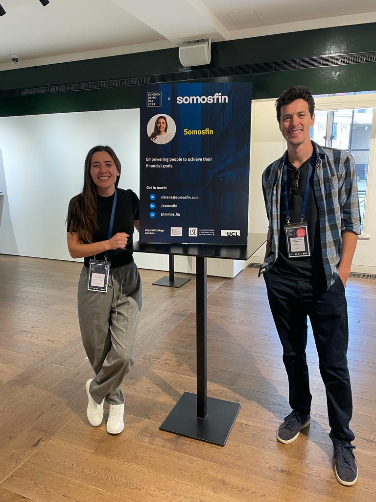

Lanzamiento somosfin

Hola Mundo!!!
(No puedo creer que estoy escribiendo algo que van a leer más personas que solo mis hermanas, amig@ y pareja!) Soy Silvana Leon, ideadora y soñadora de SomosFin, una iniciativa que busca ayudar a todos a cumplir sus objetivos financieros, a cambiar la relación con sus finanzas.
Como empezó este viaje...
Todo arranca con Sole, Sole querida! La primera valiente que dijo ‚Äúquiero cambiar mi relacion con la plata, estoy cansada!‚Äù. Sin conocernos, hablamos por telefono y nos juntamos por un cafe. Me cont√≥ sobre todas sus deudas, tooooodas! jaja Su relacion punta a punta con el dinero, su relaci√≥n con todos los bancos. Despu√©s de un caf√© y un jugo, arrancamos a trabajar. Nos juntábamos en casa con las computadoras (pre-covid), los homebankings abiertos y arrancamos. Pagando una por una, mes a mes todas esas deudas, cancelando pr√©stamos, tarjetas de cr√©dito, y la dimos vuelta! y COMO! Primer objetivo de cancelar deudas, cumplido. Segundo objetivo, ahorrar! Que emoci√≥n ese primer Plazo Fijo! Tercero, (se empieza a poner bueno) cumplir los primeros objetivos: comprar un sillon! muebles para la casa. Cuarto, permitirse so√±ar‚Ķ Permitirse plantearse esos objetivos que no parecen que los merecemos, el de Sole: vivir en Europa! Si hoy la necesitan, no la van a encontrar en Buenos Aires, mejor busquen por Italia üáÆüáπ. (Salud por Sole y todos sus metas por cumplir que se vienen que esto reci√©n arranca. üöÄüí™üèΩ )
Como siguió...
Después de Sole vino Lau, y despues Fer, y despues Vivi, luego los primeros hombres valientes en llamarnos, y ahi empezamos a hablar de SomosFin, con entidad propia. No era una consultoría, un servicio esporádico… se convirtió en un emprendimiento que tiene el potencial de ayudar a cumplir sueños a muchas más Soles!
Y hoy, publicamos esta página Web. Chic@s!! Sueño con esto desde hace años, y hoy tengo la felicidad de escribir sobre este lanzamiento con una sonrisa de “Lo hicimos!".
Sonrio al escuchar a mis amigos hablar de SomosFin, sonrio de que mi pareja cuente de SomosFin a sus amigos, sonrio fueeeerte al escuchar a conocidos diciendo que “necesitan SomosFin” porque se estresan con sus finanzas. Sonrío… y se me cae una lagrimita linda de emoción.
Gracias a todos nuestros primeros usuarios, por dejarnos acompañarlos, por el feedback, por ayudarnos a llegar a más personas que se animan a desafiar su relacion con las finanzas. Gracias por ayudar a derribar mitos, demostrar que hablar de dinero no tiene que ser taboo, que no hay que ser economista para estar bien, y que no hay que ser un genio matematico para poder ahorrar!!
Gracias a nuestros primeros coach financieros, mentores e inversores. Gracias a ustedes por creer en SomosFin, en el poder de impacto de la educación financiera.
Brindo porque todos tengamos salud financiera y podamos disfrutar nuestro dia a dia a pleno, sin culpa y sin sacrificar nuestro futuro. Somos Fin… Somos Finanzas… Somos FIN de las deudas… Somos Fin de sufrir por dinero… Somos Fin del desorden… Somos FIN, somos metas, somos objetivos! Somos todo eso.
Salud por cumplir nuestros sueños!